카카오톡 Cantavra 오픈채팅 필수 입장 조건이 오픈프로필입니다. 아직 오픈프로필이 없다면 아래의 설명을 따라 만들어주세요.
오픈 프로필을 만들 때 상태 메시지에 양식대로 자기소개 작성이 필수입니다.
1. 카카오톡을 실행하고 표시된 '채팅' 버튼을 누릅니다.
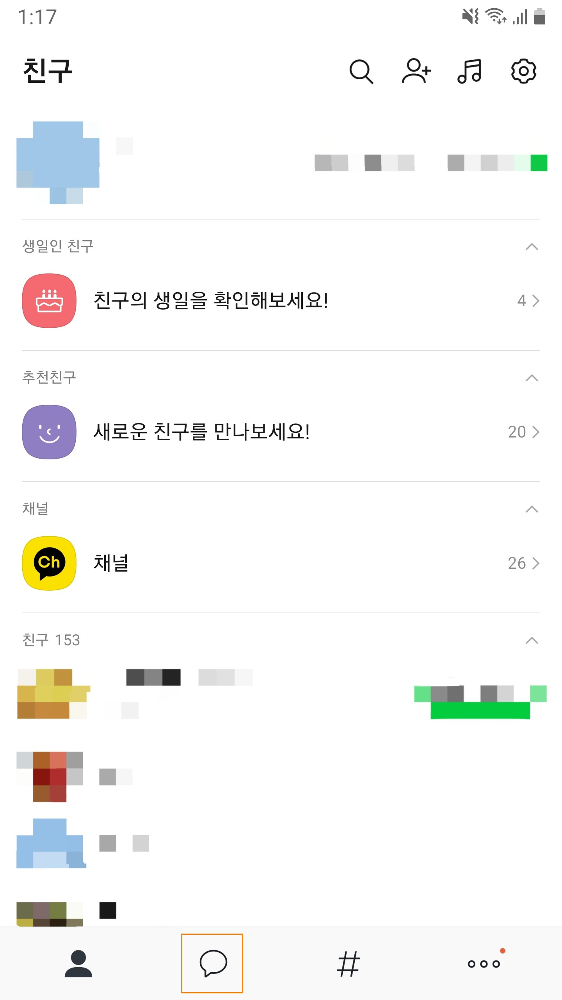2. '채팅 만들기' 버튼을 누릅니다.
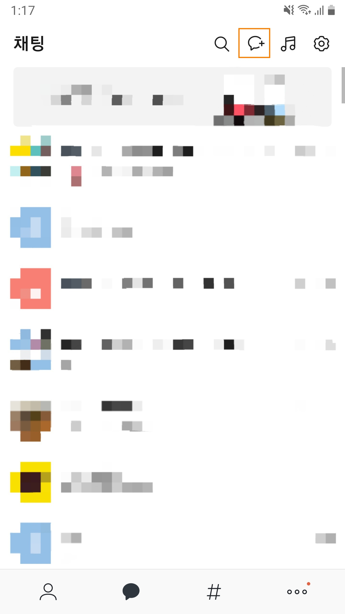3. '오픈채팅' 버튼을 누릅니다.
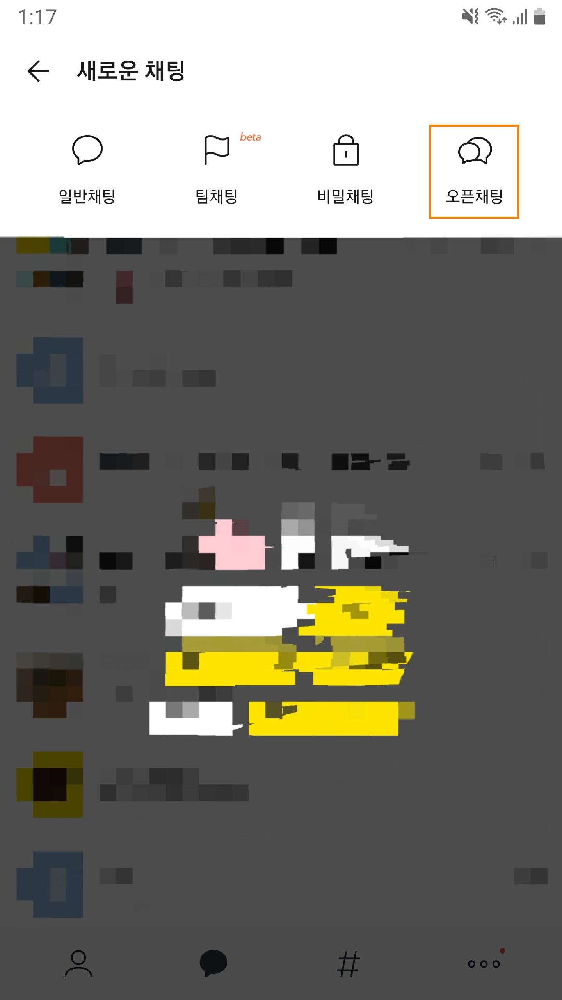4. '오픈프로필' 탭을 선택니다.
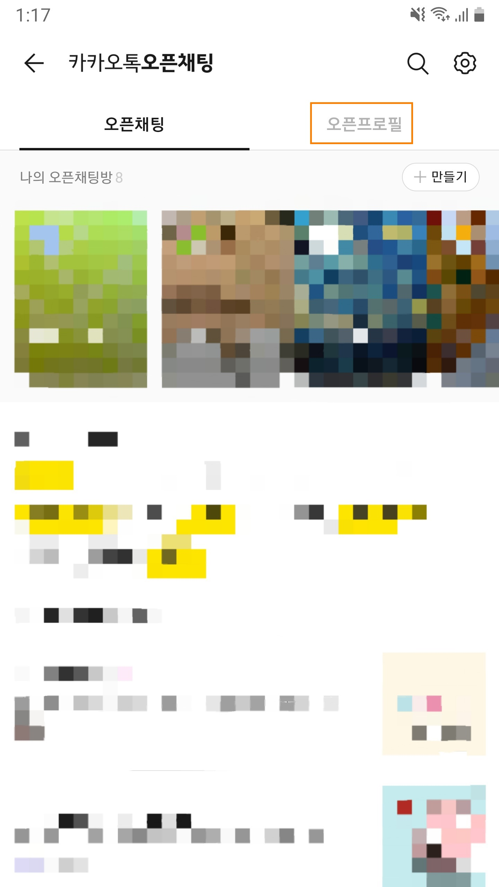5. 우측상단의 '만들' 버튼을 누릅니다.
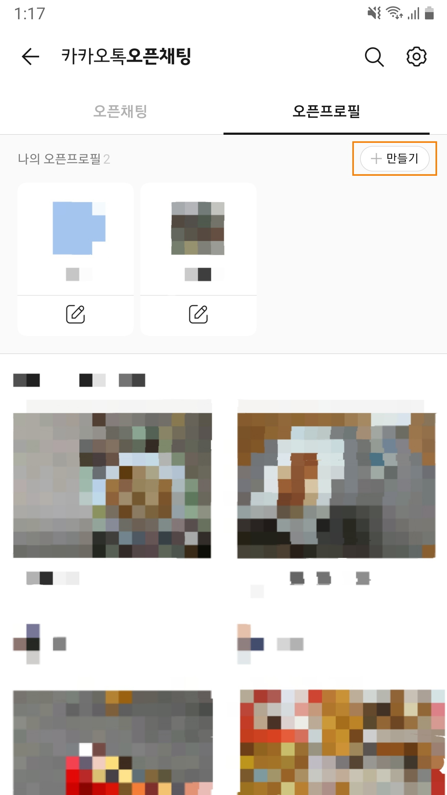6. ①을 눌러서 프로필 사진을 선택하고, ②를 눌러서 닉네임을 입력하고 저장합니다.
프로필 사진과 닉네임을 선택할 때는 따로 정해진 규칙은 없지만, 자신의 활동분야를 표현하는 것이면 좋습니다.
③에는 양식대로 자기소개를 작성합니다(필수).
자신의 분야와 관련된 관심태그도 추가하면 좋습니다.
7. 프로필 사진 선택
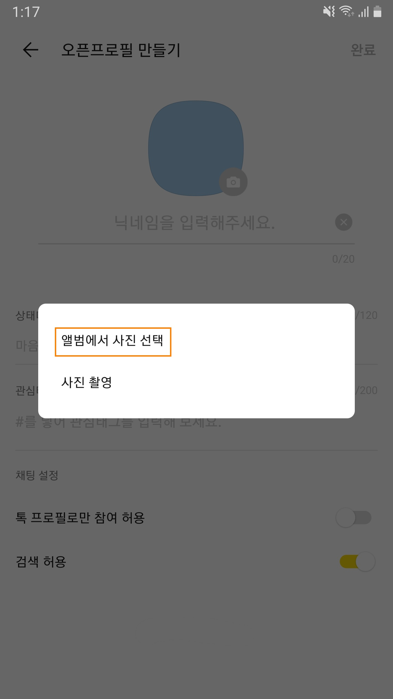8. 사진선택과 닉네임입력을 완료했으면 우측 상단의 '완료' 버튼을 누릅니다.
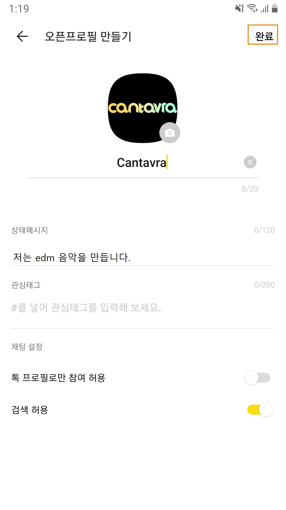9. 오픈프로필 생성이 완료되었습니다.
Cantavra 오픈채팅에 참여할 때 이 프로필을 이용해 주세요.
10. 오픈채팅방에 들어온 후 오픈프로필로 전환하면 채팅 메뉴에서 자신의 프로필을 선택합니다.
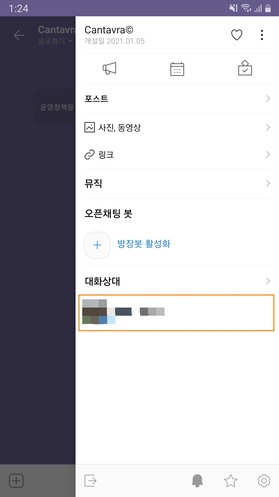11. '프로필 바꾸기' 버튼을 누릅니다.
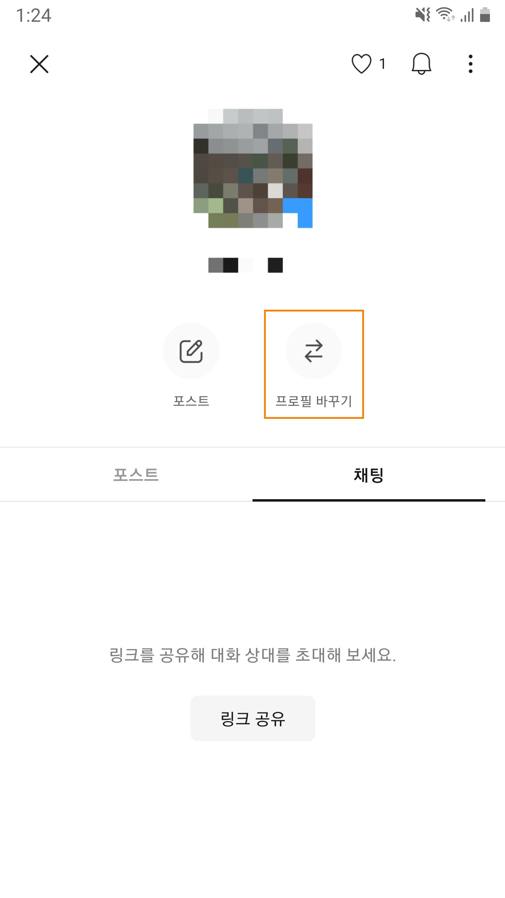12. 방금 만든 오픈프로필을 선택합니다.
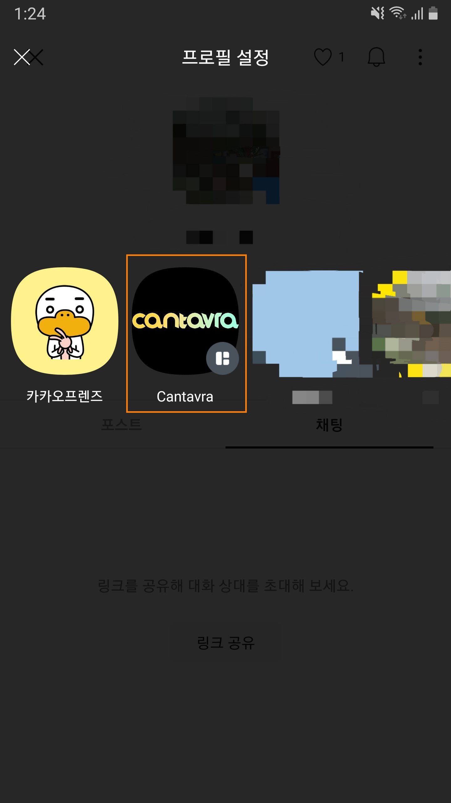오픈채팅에서의 프로필 변경이 완료되었습니다.
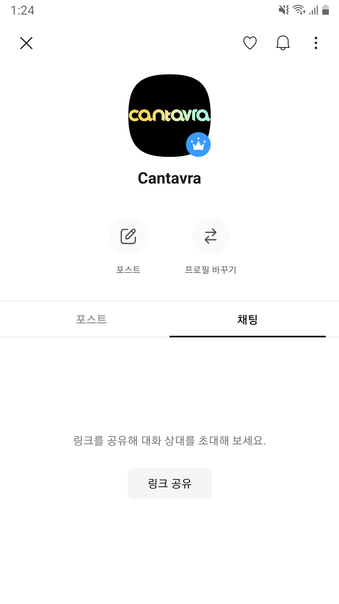
다음 양식을 따라 자신의 주요 활동 분야,
안녕하세요, ___________을 하는 __________입니다.
또 저는 ___________을 할 줄 압니다.
___________을 해 드릴 수 있습니다.
(추가 연락처 - 선택사항)
예)
안녕하세요, 그림을 그리는 미대학생입니다.
또 저는 포토샵, 영상편집, 3D그래픽, C언어 코딩을 할 줄 압니다.
화려한 그래픽을 사용한 동영상을 만들 수 있습니다.
010-XXXX-XXXX
XXXXXXXX@gmail.com
으로 연락주세요.